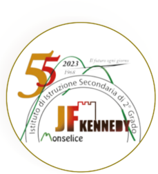
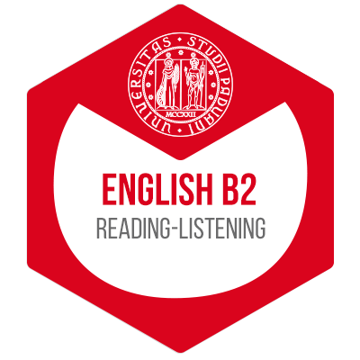

Laurea Magistrale in Ingegneria Elettronica
2025 – 2027Università degli Studi di Padova · Dip. di Ingegneria dell'Informazione
Classe LM-29 · in corso · media ponderata 28,3/30 su 60 CFU
Studente magistrale, Ingegneria Elettronica · Università di Padova
Studente di Laurea Magistrale in Ingegneria Elettronica all'Università di Padova (media ponderata 28,3/30), in cerca di una tesi magistrale da inizio 2027, o di un tirocinio, in fotonica e optoelettronica, microelettronica o progettazione digitale. Voti massimi (30/30) in Microelectronics, Optoelectronic and Photovoltaic Devices e Organic and Molecular Electronics; Verilog su FPGA Tang Nano 9K; Laurea Triennale in Ingegneria Informatica. Disponibile per ruoli di R&D in azienda o in laboratori di ricerca, in Italia o in Europa.
Università degli Studi di Padova · Dip. di Ingegneria dell'Informazione
Classe LM-29 · in corso · media ponderata 28,3/30 su 60 CFU
Università degli Studi di Padova · Dip. di Ingegneria dell'Informazione
Voto finale 95/110 · laureato il 22/07/2025
Tesi: L'equazione di Laplace (equazioni di Laplace e del calore) · Relatore: Prof. Paolo Musolino

ITIS J.F. Kennedy, Monselice (PD) · Informatica e Telecomunicazioni
Voto finale 95/100

Inglese B2Reading e Listening · Università di Padova